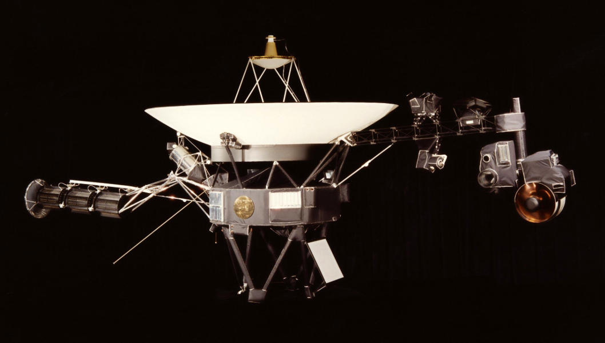
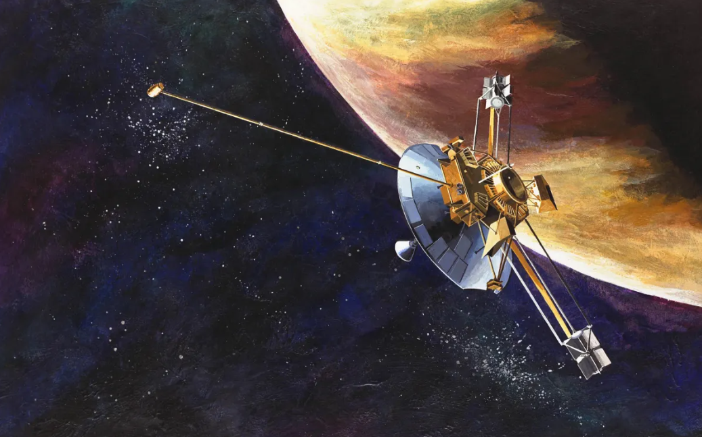

INTERSTELLAR SPACE
Voyager 1
Launched September 5, 1977
HUMANITY'S FOOTPRINT IN SPACE
Explore historic spacecraft and a car sent into space. Discover their missions, launch dates, and communication status.
Launched September 5, 1977

Launched August 20, 1977

Launched February 6, 2018

Launched March 2, 1972